Data Structures and Algorithms
with Object-Oriented Design Patterns in Java
Data Structures and Algorithms
with Object-Oriented Design Patterns in Java


-
The array-based stack implementation
introduced in Program
 uses a fixed length array.
As a result, it is possible for the stack to become full.
uses a fixed length array.
As a result, it is possible for the stack to become full.
-
Rewrite the push method so that it doubles
the length of the array when the array is full.
-
Rewrite the pop method so that it halves
the length of the array when the array is less than half full.
-
Show that the average time for both push and pop
operations is O(1).
Hint: Consider the running time required to
push
 items onto an empty stack, where
items onto an empty stack, where  .
.
-
Consider a sequence S of push and pop operations
performed on a stack that is initially empty.
The sequence S is a valid sequence of operations if
at no point is a pop operation attempted on an empty stack
and if the stack is empty at the end of the sequence.
Design a set of rules for generating a valid sequence.
-
Devise an implementation of the queue
abstract data type using two stacks.
Give algorithms for the enqueue and dequeue operations,
and derive tight big-oh expressions for the running times
of your implementation.
-
Write each of the following infix expressions
in postfix notation:
- 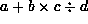,
- 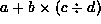,
- 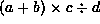,
- 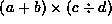,
- 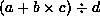, and
- 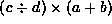.
-
Write each of the following postfix expressions
in infix notation:
- 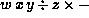,
- 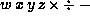,
- 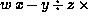,
- 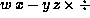,
- 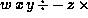, and
- 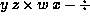.
-
Devise an algorithm which translates a postfix expression
to a prefix expression.
Hint: Use a stack of strings.
-
The array-based queue implementation
introduced in Program uses a fixed length array.
As a result, it is possible for the queue to become full.
-
Rewrite the enqueue method so that it doubles
the length of the array when the array is full.
-
Rewrite the dequeue method so that it halves
the length of the array when the array is less than half full.
-
Show that the average time for both enqueue and dequeue
operations is O(1).
-
Stacks and queues can be viewed as special cases of deques.
Show how all the operations on stacks and queues
can be mapped to operations on a deque.
Discuss the merits of using a deque to implement a stack or a queue.
-
Suppose we add a new operation to the stack ADT
called findMinimum
that returns a reference to the smallest element in the stack.
Show that it is possible to provide an implementation
for findMinimum that has a worst case running time of O(1).
-
The breadth-first traversal method
shown in Program
visits the nodes of a tree in the order of their levels in the tree.
Modify the algorithm so that the nodes are visited in reverse.
Hint: Use a stack.
 Copyright © 1998 by Bruno R. Preiss, P.Eng. All rights reserved.
Copyright © 1998 by Bruno R. Preiss, P.Eng. All rights reserved.